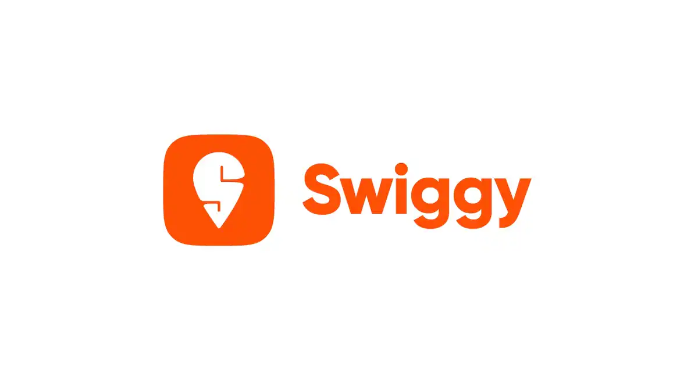
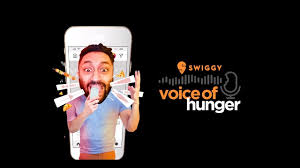
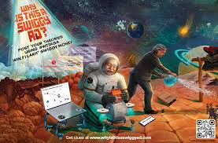

How Swiggy turned Instagram into a participation engine and engineered mass curiosity — redefining digital brand engagement in India.

Swiggy has consistently positioned itself as more than just a food delivery platform. The brand has evolved into a cultural and digital-first marketing powerhouse that understands consumer behavior, platform psychology, and engagement-driven storytelling.
Among its many campaigns, two stand out as exceptional examples of modern marketing success: Voice of Hunger and Why Is This A Swiggy Ad? These campaigns did not simply generate awareness — they created conversations, participation, and emotional recall.
The common success factor is that Swiggy did not behave like a traditional delivery platform. Instead of selling product features or discounts, the brand sold participation, emotion, and conversation — a masterclass in modern brand thinking.
Swiggy's Voice of Hunger campaign became one of the most talked-about social media campaigns because it transformed a simple Instagram feature into a brand experience. Users were invited to create food-shaped voice note waveforms using Instagram's DM feature — visually resembling kebabs, pancakes, and fries.
Instead of pushing direct offers or discount-led communication, Swiggy focused on interaction and platform-native behavior. The objective was clear: build massive engagement, increase social reach, and strengthen brand recall among digital-first users.
"When a brand builds content around how people naturally behave on a platform, engagement increases significantly. Users themselves became the distribution channel."
The reward system strengthened participation through daily prizes and voucher-based rewards. The creative execution reduced creative fatigue and multiplied reach organically — users became the distribution channel. From a funnel perspective, it created awareness, drove participation, and built social proof through mass entries.

This campaign did something most brands avoid: it deliberately created confusion. Instead of clearly promoting food delivery, it launched mysterious ads across digital, outdoor, and print that made audiences question the very purpose of the communication.
Swiggy understood that in a cluttered advertising environment, direct promotion often gets ignored. Curiosity, however, forces attention. By making users ask why the ad exists, the campaign increased dwell time, discussion volume, and organic sharing — transforming passive viewers into active thinkers.
"Curiosity can outperform direct advertising when the goal is mass attention and brand recall. The question itself became the campaign."
The campaign used OOH, print, and social content to create layered storytelling. Each format contributed to the mystery and extended the campaign's lifecycle. The campaign reinforced Swiggy as an internet-first, witty, culturally aware brand — a form of attention engineering at its finest.

Voice of Hunger didn't advertise on Instagram — it used Instagram's own behavior as the campaign mechanic. This is the highest form of platform strategy.
By making users the creators, Swiggy turned every participant into a brand ambassador. User-generated content multiplied reach without additional media spend.
The "Why Is This A Swiggy Ad?" campaign proved that confusion — when intentional — creates stronger recall than any direct message. The question was the product.
Swiggy consistently positioned itself at the intersection of food, internet culture, and social commentary — making it feel like a friend, not a brand.
Layering the curiosity campaign across OOH, print, and digital created a unified sense of mystery that extended engagement far beyond a single touchpoint.
Great campaigns do not interrupt consumer behavior — they become part of it. Swiggy mastered this principle across both campaigns consistently.
Swiggy's campaign success comes from a single core belief: great campaigns do not interrupt consumer behavior — they become part of it. Whether through Instagram participation or deliberate curiosity, Swiggy consistently made consumers the protagonists.
The first campaign used platform-native interaction. The second used curiosity and psychological engagement. Both show a mature understanding of audience behavior that most brands never develop.
For marketers, the most actionable takeaway is to design campaigns that people want to join, discuss, or solve. When consumers become participants instead of viewers, campaign performance improves dramatically.
At Brand Business Talk, we help brands with research, strategy, market insights, and growth recommendations. Let's build your brand growth strategy together.